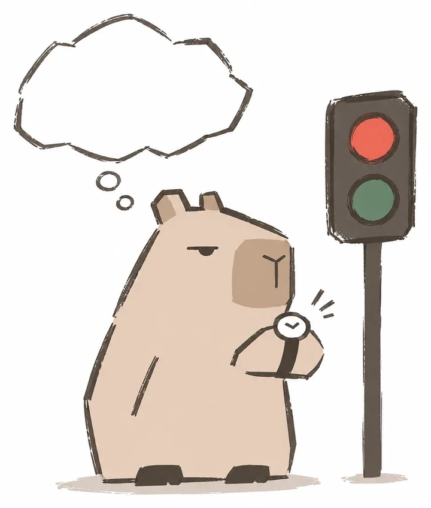

내 주변 횡단보도, 다음 초록불까지 얼마나 남았을까요?
가입 없이 써요. 위치는 이 폰 안에서만 써요.
위치는 이 폰 안에서만 쓰고 어디에도 보내지 않아요.
예상치예요. 교통량에 따라 신호가 바뀌는 곳에서는 틀릴 수 있으니 건널 때는 반드시 실제 신호등을 보세요. 횡단보도 정보: 전국횡단보도표준데이터(공공데이터포털) · 신호정보: 경찰청 도시교통정보센터(UTIC)